01 · L’Anse aux Meadows
Newfoundland and Labrador · front artwork reframed to full bleed; 5 × 3.5 in back updated


Your great-aunt has sent you her field bag and the first postcard from a long journey. More cards are hidden inside. Together they lead to the invitation she wants you to earn.
Your great-aunt Liv has been tracing the family’s Nordic origins. Her first postcard arrives with her locked field bag. Solving what she left behind releases more postcards from more places.
The postcards are the game. Everything else in the bag exists to act on them: the comb reads a message, the balance orders three cards, the board is set up by one. Players use the cards as ordinary clues along the way, and at the end the whole deck becomes one final answer.
Liv loves setting family challenges. This parcel is her invitation test. Each stage protects a piece of her research and releases the journey a few places at a time.
Every card does a job once, so players keep it. At the end every card does a second job, and the deck they have been carrying turns out to be the map of her whole trip.
The bag arrives locked, with the first postcard and two luggage tags attached to it. Each tag has a printed “If found, please return to” line that Liv never filled in properly — instead she hand-wrote the address of a hotel she stayed at, and the street number is the only number on the tag.
Postcard 01 is from L’Anse aux Meadows and names the place. The tag addressed to a L’Anse aux Meadows hotel therefore carries the first two digits; the other tag carries the last two.
Code 1021 — the year tree-ring dating placed the Norse at L’Anse aux Meadows. Tag A: Vinland Trail Lodge, 10 Skipper’s Wharf, L’Anse aux Meadows, NL. Tag B: Hôtel Rollon, 21 avenue Rollo, Rouen, France. Note what the postcard is doing: it supplies the ordering rule, not the data. That is the standard the rest of the game should hold to.
Players finish with four printed maps and all 18 postcards. Each map carries one trail. Placing that trail’s cards and drawing its legs in the right order traces a shape, and the four shapes are the four digits of the final code.
Candidate code 1972: Leif 1, Rollo 9, Aud 7, Harald 2. The shapes still have to be tested at true print size — the family 9 is the riskiest. Whether the cards are pinned, connected with cord, or read under an overlay is undecided.
Two are decided; the rest are worked-up candidates, not a settled sequence. None of them has a container or a code assigned any more — those were removed when the compartment structure was unfrozen.
Locked pockets, tactile props, clues saved for later, a final answer built from collected pieces and a warm personal reward.
Weathered field notes, a miniature board, museum-style object labels, and a deck of postcards that is the spine rather than the dressing. Keep rune translation to one short puzzle so the rest feels varied.
Eighteen postcards as the game itself, with every other prop reduced to an instrument that acts on them. This tab is the current thinking, not a finished spec — the parts that are not settled are marked, and the full list lives in Open questions.
The stamp motif gives the trail; the postmark gives the date and the place. All eighteen feed the final reveal: split by stamp, order by date, draw the legs, read the four digits.
Real trivia about a real place, in a titled Fun Fact block (was the printed caption — renamed and moved when the address block shrank to make room for it). Written on card 01 (the butternut wood found far from any butternut tree) — the template for the other seventeen.
Alone or in a group. Her message sets a task, or four cards have to be physically lined up before they say anything at all.
This is how real picture postcards work, and it is what lets jobs 2 and 3 sit on one small piece of card without either getting in the other’s way.
The split does quiet work. A typed Fun Fact can carry a number without ever looking planted, because it is a genuine fact about a genuine place. And because she argues with it in her own handwriting elsewhere on the card, she can point at exactly the number she wants read without ever writing “use this number.”
PC-12 closed.The figures in the sample caption above are illustrative and have not been source-checked. See Design spec for the verification rule.
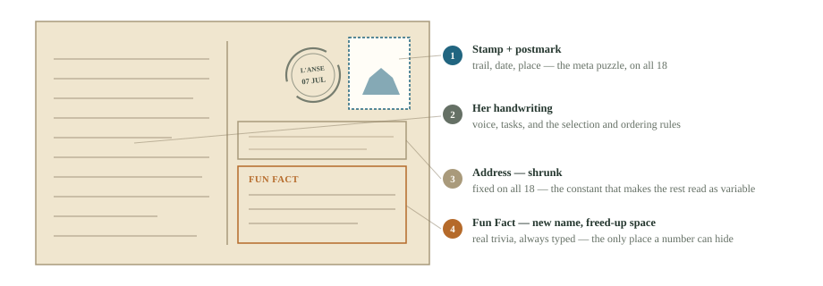
If the postcards are the game, these are the game’s verbs. Each is physical, each is resettable, and each costs nothing beyond print and a pair of scissors.
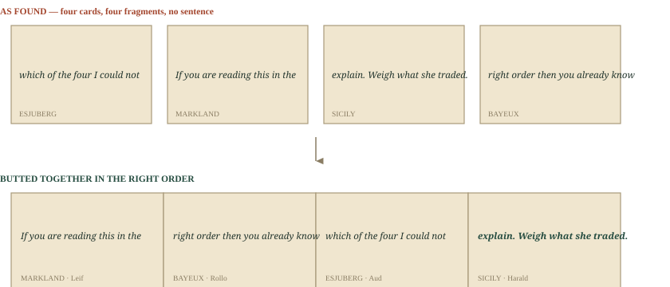
WEIGH WHAT SHE TRADED), the one that breaks the assumption that every answer is a number.Six puzzle families across eighteen cards, each card carrying at least one job besides the final ordering.
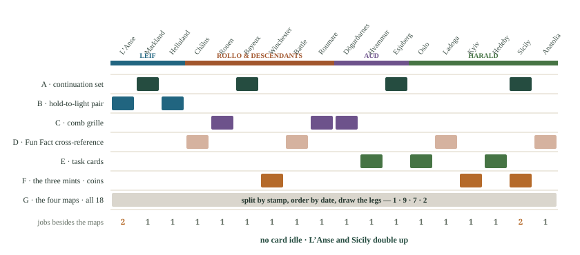
| Family | Cards | Selected by | Yields |
|---|---|---|---|
| A · Continuation | Markland, Bayeux, Esjuberg, Sicily | One per trail — read off the stamps | WEIGH WHAT SHE TRADED |
| B · Hold to light | Helluland, L’Anse | Her message on one names the other | To assign |
| C · Comb grille | Rouen, Roumare, Dögurðarnes | The comb fits these messages’ line spacing | To assign |
| D · Fun Fact cross-reference | Châlus, Battle, Ladoga, Anatolia | Needs inventing the one gap in this pass | 4 digits, taken from real trivia |
| E · Task cards | Hvammur, Oslo, Hedeby | Her message says what to do | comb · board · balance |
| F · The three mints | Winchester, Kyiv, Sicily | The three replica coins, by mint city | 3 digits, ordered by weight |
| G · The four maps | All eighteen | — | 1972 |
PC-05.If the cards are the game, every prop’s job is now to act on a card. The comb reads a message; the magnifier reads a caption; the balance orders three cards; the board is set up by a card; the red filter and the UV pen reveal a layer on a card. The rune stick and the cryptex are the only things that never touch the deck — which is fine, since they are the one pair that should feel as though they came from somewhere else entirely.
She crisscrossed rather than finishing one leg before starting the next. Seventeen of the eighteen dates are still unwritten; this decides the shape they take.
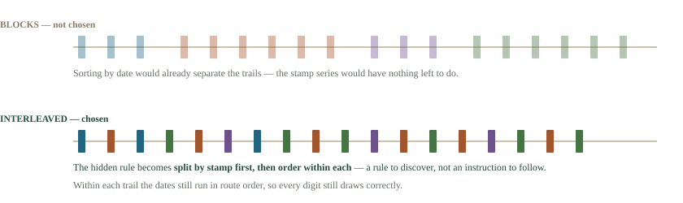
PC-03.| Decision | Value |
|---|---|
| Count | 18 — one per stop in TravelMap/Norse_Aunt_Route_Plan.json (Leif 3, Rollo 6, Aud 3, Harald 6) |
| Size | Approx. 5 × 3.5 in (vintage postcard proportion) |
| Format | Purchased but never sent — addressed and stamped like a real postcard, just not mailed |
| Recipient address | John Ericson, 24 Longship Way, Ottawa ON K1L 1S1, Canada — the same on all 18 |
| Stamp series | One motif per trail, reused across countries within that trail — see Design spec |
| Ordering key | The postmark date, on every card |
| Anomaly stamps | Dropped Their job was to select which cards matter. With every card active there is nothing left for them to select. |
The single place where unresolved design questions live. Every question has a stable ID so chat, HANDOFF.md and this page can refer to the same thing. If a question is not on this list it is not tracked; if it is resolved, the entry changes to Decided rather than disappearing.
PZ-06); and it has metres-per-square resolution where a grid on Harald’s 2,800 km map would be about 200 km per square and locate nothing.HI-05 applies); whether the optional find is written in plain ink or in UV — plain ink is more findable, which matters more than it sounds for something optional, while UV would finally give the blacklight a job; and whether the site plan is worth a sheet at all if it stays pure payoff.1021 — the year tree-ring dating placed the Norse at L’Anse aux Meadows. Each tag is a fictional hotel luggage tag: a printed “If found, please return to” line Liv never filled in properly, with a hand-written hotel name and address instead. The street number is the only number on the
tag, so it stands out without needing extra emphasis. Tag A: Vinland Trail Lodge, 10 Skipper’s Wharf, L’Anse aux Meadows, NL. Tag B: Hôtel Rollon, 21 avenue Rollo, Rouen, France.07 already printed on card 01’s postmark?0734 mechanism and now has no job. Either give it one, or remove the underline and regenerate the card’s PDF and PNG.07 JUL) is set. Waiting on PC-03. Within each trail the dates must run in route order or the digit will not draw.Norse_Aunt_Route_Plan.json. L’Anse aux Meadows is genuinely first, so card 01’s message is literally true, not just a generous reading of it. Card 01’s postmark should date first on the trail, not last, once dates are assigned (PC-03/PC-04).F1 grid reference (PZ-10). Players skip that grey strip because it is visibly boring, and the imprint hides inside it. Strip the credit off the card and the imprint becomes the only small grey text on an otherwise clean layout — more conspicuous, not less. Decided: the attribution stays on the card.Source and full attribution: Postcards/Image_Credits.html. A file path is the only anachronism on the card.Source and full attribution file-path line is dropped; one credit line remains — Image adaptation: “L’Anse aux Meadows, The Meeting of Two Worlds” — D. Gordon E. Robertson, CC BY-SA 3.0. That carries the modification notice, title, author and licence, so it satisfies CC BY-SA 3.0 on its own; the source URL and adaptation licence stay on the credits page. The imprint sits right-aligned opposite it on the same baseline.PC-14 is fixed — their printed URLs are currently their only attribution record anywhere.Image_Credits.html had one entry, Postcard 01. Cards 02 and 03 carried their attribution only on the cards themselves, as four printed lines each including two full URLs — so the anachronism PC-09 removed from card 01 was still there, and worse, but stripping it would have deleted the project’s only record of those attributions.Image_Credits.html gained matching entries for Postcard 02 (“Battle Harbour - MacGillivray”, Matt MacGillivray, CC BY 2.0) and Postcard 03 (“Grinnell Glacier Bergie Bits, Baffin Island”, Gregory “Slobirdr” Smith, CC BY-SA 2.0), each with original work, photographer, source file page, licence, changes and adaptation licence, sourced from References/README.md. Only then were the printed credits reduced to one line each, in card 01’s form.1576; build_topedge_test_sheet.py now uses 300 dpi and a true 5 in strip, and its PDF was regenerated.build_postcard_collection.py remains at 1536 × 1024 on a 6 × 4 in page, so cards 02 and 03 are not fully converted until its SIZE and PAGE change together and the collection outputs are rebuilt.1576.SIZE and PAGE together in build_postcard_collection.py, then rebuild and inspect cards 02/03 and the full collection PDF.231. That works on a bought board as well as a built one, and it removes the objection that printing digits on a game board announces it as a puzzle prop. Setup now arrives via the map back and the museum pamphlet (PZ-07).HRAFN fits a five-ring cryptex and is also currently assigned to a five-letter lock. Only one of the two can have it.KAMBR (Old Norse for comb) is proposed: it self-verifies, it names the comb prop so the lock opening is redirect clue 2, and it ties to Kambsnes on Aud’s trail.WEIGH WHAT SHE TRADED). Clue 3 is written (EVERY CARD IS A PLACE). Clue 2 depends on PZ-03.PZ-07 needs for the map whose back carries the board setup. 5 mil pouches over 3 mil for a sheet that is drawn on and wiped repeatedly.#216580, Rollo #A2562D, Aud #6D528B, and #467444 for Harald once that sheet exists — with the grid references reversed to white. Four laminated sheets are hard to tell apart on a crowded table, and the band is the only element visible from any edge that carries no map content. Built into build_trail_maps_pdf.py as a band key per trail.#DCE7E4, land #EFE3C4) and printers cannot lay down white, so coloured stock would shift both fills toward the paper and compress a contrast that is already narrow. That contrast is load-bearing rather than decorative: it is what identifies the unlabelled animals on Leif's chart, so it cannot be spent on route
identity. Coloured stock is better spent on the paper props — her letters, the museum ticket and its index, the luggage tags, the pamphlet — where ink coverage is light and the paper colour becomes the design instead of fighting it.1972 in a real play-test. Harald’s 2 is the loosest of the four — accepted, because by then one lock remains and the code parses as a year, which self-checks.PZ-07). The front carries seven unlabelled animal vignettes whose names are the key to a lookup on the museum ticket — see the Beasts on the chart puzzle. That answers the “watch” note below for this sheet: the front job uses the geography, not just the paper.Kambsnes is already labelled on her sheet, and PZ-03 proposes KAMBR for the five-letter lock precisely because it ties to Kambsnes. The map would be what confirms the word.Saint-Clair-sur-Epte is on his sheet, where the 911 grant of Normandy was made. A date or fact beat could hang off it (HI-05 applies). A boar vignette belongs on this sheet — wild boar are native to continental Europe and about as Norse a beast as exists, and Roumare was a hunting forest, so a boar in Roumare is the most natural thing on the map. It was excluded from Leif’s chart on the native-species test.1972. Dates can no longer be assigned freely per card; they have to be checked against this once written. One anchor already agrees: postcard 01 is L’Anse aux Meadows, dated 07 JUL, and it is the first card of the game — so Leif leading is already true.PZ-09). Open: the exact split for whichever board wins PR-08, and the blot shape — it must be irregular at the edges, not a clean rectangle. Also the third “line two papers up” gesture in the bag, after hold-to-light and the 02/03 top-edge join; accepted, but worth not adding a fourth.PZ-08, which takes the digit order from the postmarks.1 mid-game they have discovered the mechanism themselves, which is a good beat, and they hold one digit of four — still a thousand combinations. The other three trails are protected instead.PZ-08's sort needs, and its continuation-set card (Markland, Bayeux, Esjuberg, Sicily), which is needed mid-game.9 opens into a zigzag closer to a 5.2 into a triangle with a tail, but Harald has no sheet in TRAILS yet so this used an approximate projection. Re-test when his map exists.ST-01: the final container must release three postcards as well as the reward. Those three can carry the finale's instruction between them, one fragment each, which keeps every card active.Vinland Editions · Series F, No. 1 right-aligned on the last line of the Fun Fact caption, in the same muted grey as the image credit directly beneath it. Series F, No. 1 is square F1 of Leif’s sheet, where the polar bear is drawn. English throughout; the French Édition / Série form was considered and dropped.PZ-05/PZ-09 deciding which card is actually live at that point in the sequence.NorseBackpack/Props/build_luggage_tag_inserts_pdf.py) prints the street number bold and dark to compensate. Not yet purchased or physically test-printed.output/pdf/ are 9.3 MB each and tracked. Decide what is committed before eighteen cards exist.NorseBackpack/TravelMap/build_art_placement_guide.py computes the legal area and renders it — green is sea clear of the route corridor, every label box and the title furniture; red is the route plus a 26pt halo where nothing prints.PR-13’s frame pan; the numbers above this line are superseded twice over — read the build script’s LEIF_ART comments for the current ones.fill_art_alpha_holes.py fills every fully-enclosed transparent hole (a sail, a hull, an iceberg face) with a pale paper tone, so the reference grid can no longer print through a ship that was effectively made of glass; the whale and the settlement came back untouched, since both are genuinely open line art with no
enclosed body, not filled silhouettes. The longship was also shrunk, from a first pass at 2.36 × 1.61 in down to 1.70 × 0.85 in — it was crowding the Labrador Sea.#B56A2A, #59635D, #283B34), and reduced opacity so the art recedes behind the map information. Nothing crosses a sea-slot boundary.PR-11 changed and was recut.PZ-07), whose registration instruction is literally “align on the grid lines.” Different faces, different look, but see PR-09.ST-05’s dig-site plan is gridded too. Two gridded sheets in one bag is either a family resemblance or a false lead players will burn time cross-referencing. Undecided.PR-12 grid column (2.94°) to −63.56..−37.06. Trims the empty Nunavik/Ungava Bay/Québec mass on the west and brings Greenland’s full coast into view — a pan, not a zoom; the scale bar is unchanged in km-per-inch.NorseBackpack/TravelMap/build_trail_maps_pdf.py. Most settlement labels are drawn from stops.js, the 72-entry sourced research corpus, so their coordinates are already part of the project’s vetted dataset. The remainder are curated extras marked APPROX in the config: typed from general knowledge, good to roughly a tenth of a degree, not source-checked. Why this is not merely tidy-up: two Icelandic names in the first draft — “Reyðhol” and “Hvammsýla” — were not real places. They came from faulty recall and were caught only on visual inspection. Reykholt was the real place being garbled. Every APPROX label needs checking against a source before any sheet is printed for play. Separately: Natural Earth 50m is coarse at Aud’s 4.5° frame — Breiðafjörður’s fjords are smoothed and Snæfellsnes is blocky. Acceptable as a stylised poster map, not as a survey. Finer Natural Earth data would fix it if that ever matters.PR-03. The offset must show through the pamphlet's end panel when flipped — so that panel has to be blank on both sides, on stock thin enough to read through. The smear on the map back must look like a convincing accident at arm's length without going so dark that it swallows the residual grid lines the
registration depends on. Print both at true size before the artwork is finalised.PZ-07’s map choice: the board setup prints on the back of Leif’s map, and that sheet is laminated. Thin stock plus lamination can let the grid ghost through to the map front — which would foul exactly the clear sea the vignette slots depend on (PR-11). Test stock weight before committing. And now in the other direction: PR-12 puts a printed reference grid on the front of that same sheet, so the test has to read both faces — a front grid ghosting onto the back would add noise to exactly the lines the offset registers against.PR-14. The rune stick uses neutral tally-notches rather than invented runic text. No second-batch icon is placed on a finished prop yet.KAMBR. Artwork to be redrawn.Candidate puzzles, clue devices and lock types that have been worked up but not chosen. Nothing here is committed. Move something out of this tab only when it has actually been decided, and record the decision where it belongs — the Postcard system tab for card mechanics, Props & choices for objects.
Each has a full mechanism in the Puzzle details tab. None has a container or a code any more.
PZ-01 is decided at three moves, with the king's leg lengths as the code. Setup arrives split across a map back and a museum pamphlet (PZ-07); the open call is bought board versus built (PR-08).PR-02.The full menu. The ones in use are marked; the rest are available and cost nothing but print.
PZ-03.PZ-02.PR-06.A final message hints that the dig has uncovered something alive. Keep the ticket reveal and make the supernatural layer a final tease.
Players pin each postcard location and connect the stops with cord instead of drawing. Superseded by PZ-06.
A spent boarding-pass stub in a side pocket, a bus ticket with a place name, a folded museum floor-plan with one room circled, a pressed leaf in the notebook. None of it has to be a puzzle; one or two turning out to matter later satisfies the soft-red-herring rule.
Edge puzzle decided: Cards 02 and 03 are full bleed. Rotate Card 02 by 180 degrees and butt its top edge against Card 03’s top edge; the cloud-like half-digits register as 1576. Their 1500 × 1050 reframes use the same symmetric crop, so the mirrored centres still align exactly.
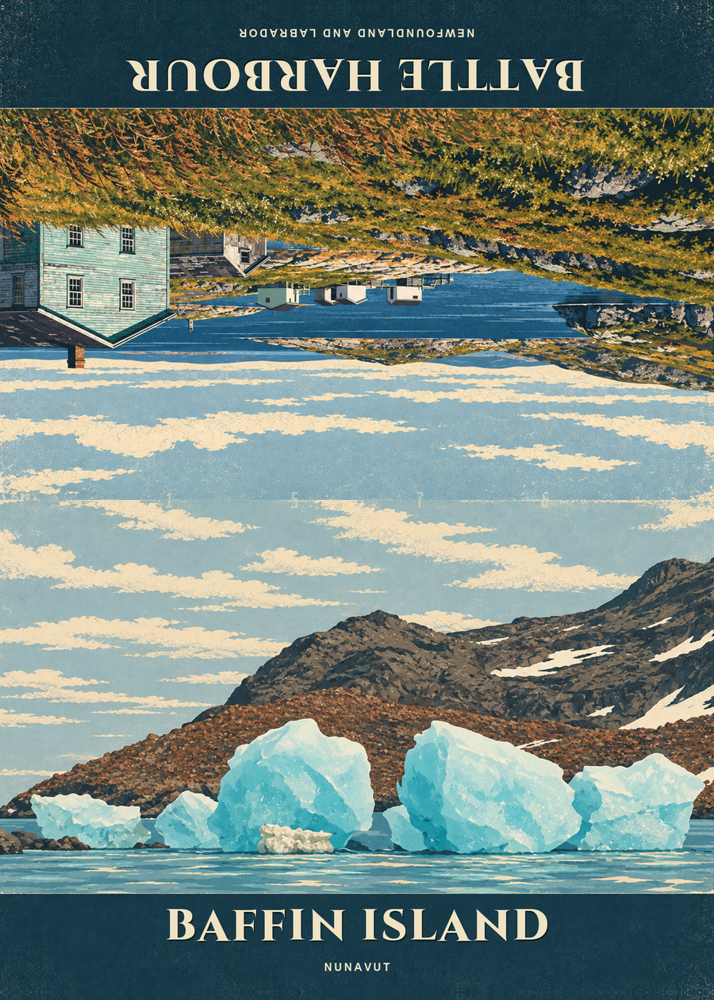
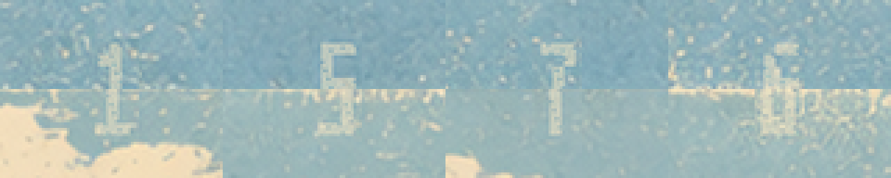
Newfoundland and Labrador · front artwork reframed to full bleed; 5 × 3.5 in back updated
Newfoundland and Labrador · back message and date pending
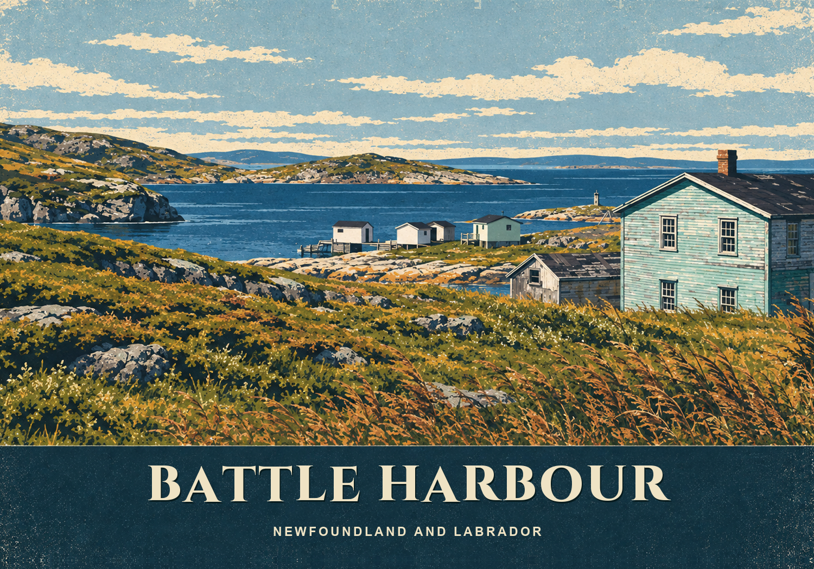
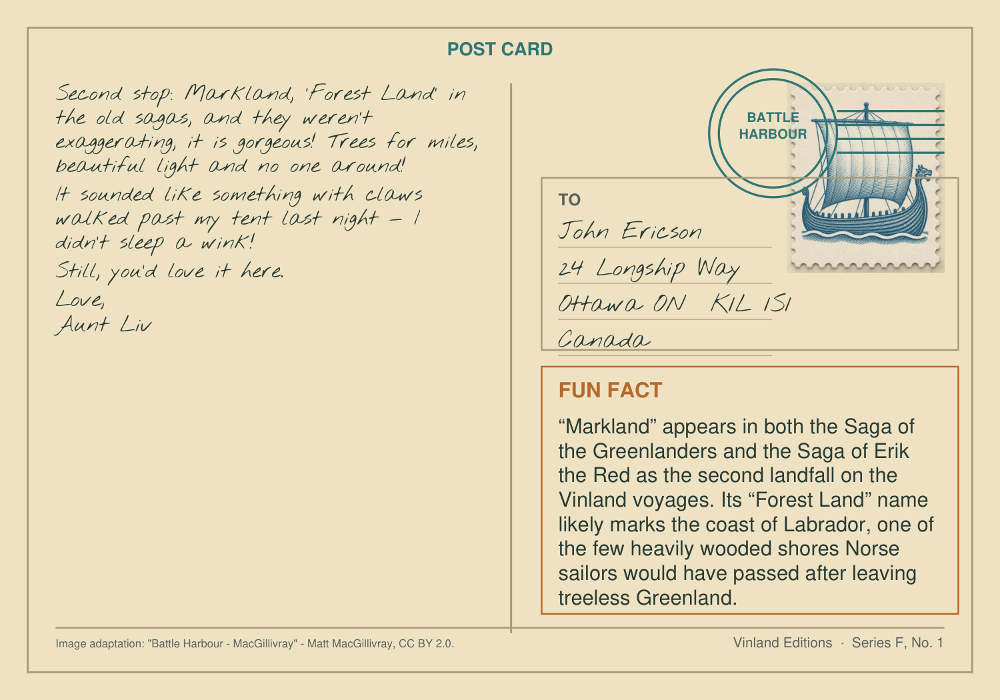
Nunavut · back message and date pending
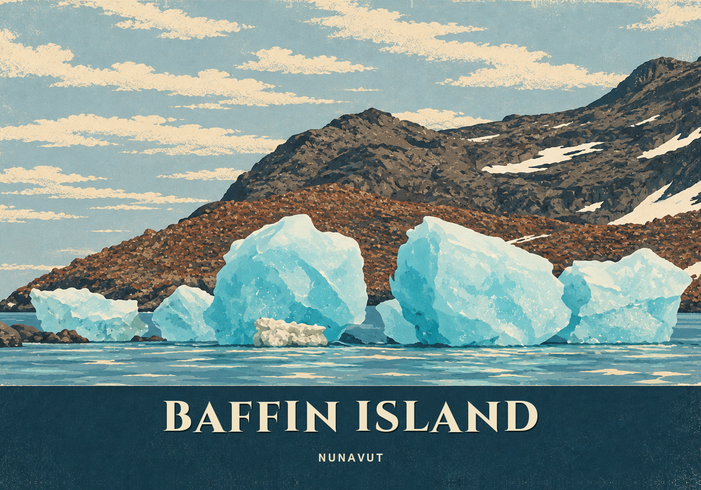
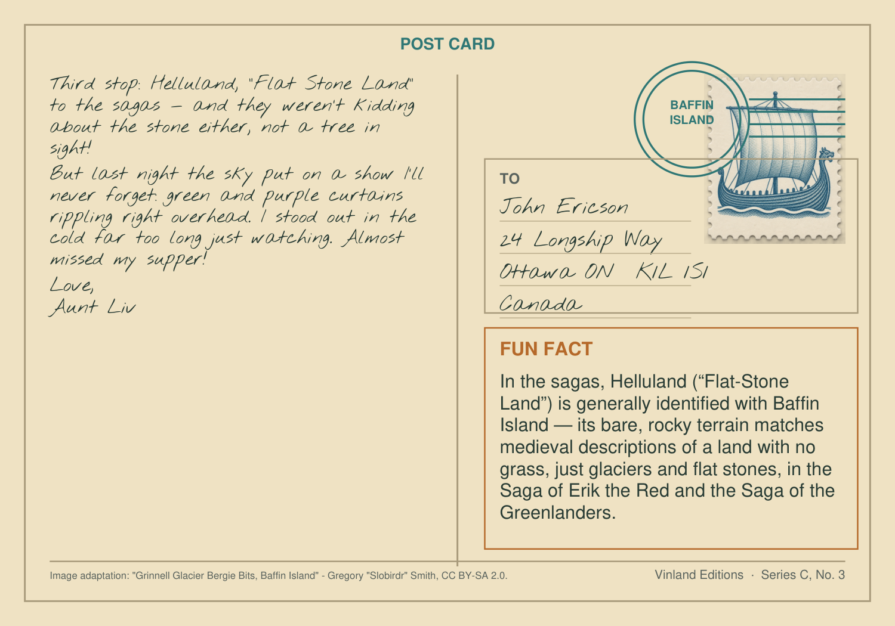
L’Anse aux Meadows: D. Gordon E. Robertson, CC BY-SA 3.0. Baffin Island: Gregory “Slobirdr” Smith, CC BY-SA 2.0. Battle Harbour: Matt MacGillivray, CC BY 2.0. All three photographs were adapted into poster-style illustrations. Full source URLs and adaptation notes are recorded in the postcard source register.
The retired harbor-postcard prop has been removed. Current postcard artwork is collected in the Postcards section.
Your aunt’s private key assigns digits to three rune symbols. Read left to right.
Tap the matching key entries in order.
It teaches players to trust the supplied reference cards and gives access to the richer physical tasks. In the real bag, the key can be split across a catalogue card and the object tag.
This is her invented digit cipher using rune shapes. It is not a historical rune-to-number system.
Move the king to a gold corner in exactly three moves. Slide any distance horizontally or vertically. Dark pieces stay fixed. No jumping or captures. Count how far he travels on each move — the three leg lengths are the code (PZ-01). Nothing is printed on the squares.
A custom solo puzzle inspired by hnefatafl. These simplified rules are printed on the prop. No knowledge of the full game required.
PR-08) — a bought set cannot have the compartment.PZ-06). No pins, cord or overlay. Three are built by NorseBackpack/TravelMap/build_trail_maps_pdf.py (Leif, Rollo, Aud); Harald is blocked until his two regional stops become named places. Each sheet carries a title only — the projection and coastline credit was dropped as well (Natural Earth is public domain and asks for no attribution; provenance stays in the build script and TravelMap/README.md). No trail name, no numbering, no instructions (PZ-08), and stops are unmarked so players find them by name. Answer keys build from the same script, so a key cannot drift from the sheet it answers. Label provenance and an invented-name incident are tracked in PR-10.ST-05). Direction proposed, content not decided.Design for repeat play: no writing on irreplaceable props, all loose pieces inventoried, and every puzzle given a clear reset state.
NorseBackpack/Props/build_luggage_tag_inserts_pdf.py. Candidate purchase only — not yet bought or test-printed (PR-01).All four are candidates only; none are confirmed purchases or assigned to a final puzzle step.
View the Koolehaoda vintage canvas backpack
The listing describes the L-Coffee version as a canvas-and-leather-style 35 L backpack sized 46 × 32 × 20 cm, with a main compartment and several pockets. Its field-bag look suits the story.
Candidate only. Before purchase, confirm current price and availability, then test the actual lock attachment points, pocket access, prop fit, hardware durability and reset workflow. Seller measurements and claims have not been independently verified.
View the FunOwlet canvas zipper tool bag, 4-pack
A set of four heavy-duty canvas zipper pouches with carabiner clips, meant to fit inside the main backpack. Note: listing describes plain canvas, not wax/waxed canvas. Each pouch would be locked individually (e.g. a small combination lock through the zipper pull) rather than the set sharing one body with built-in compartments.
Candidate only. Confirm pouch sizes and canvas weight fit the props planned for each stage, and test that a chosen mini lock actually passes through the zipper pulls before committing.
Use an adventurous aunt, dry museum humour and satisfying discoveries. Keep danger fictional and light; avoid horror, solemn ritual or dense historical exposition.
The mystery should feel clever and curious, not childish. Let the props carry the atmosphere while clue wording stays direct.
Assume no prior Norse knowledge. Challenge should come from connecting evidence, handling objects and spotting patterns—not trivia, tiny print or obscure rune knowledge.
Difficulty target: a notch harder than the finished Hiking backpack. The lever is convergence — at least two codes should need three separate props — not obscurity.
No duration claim yet. Play-test with both adults and teens before setting one.
A final message hints that the dig has uncovered something alive.
Keep the ticket reveal and make the supernatural layer a final tease.
Players pin each postcard location and connect the stops with cord instead of drawing directly on the map.
Superseded by PZ-06. Not dropped on taste — the stops cluster too tightly for it. Rouen and Roumare sit 0.13 in apart on a letter map and 0.38 in apart on a 24 × 36 poster, so two postcards cannot both be pinned there at any printable size. Drawing on laminate replaces it.
Compare a drawing, a repair note and a catalogue entry to identify a mislabeled replica. Its accession number opens the archive.
A swap for family records if you want less genealogy.
Every unresolved question now lives in one place, with a stable ID, in the Open questions tab. Nothing is tracked here any more, so the two lists cannot drift apart.
Current assumptions: mostly adults with potential teen players, no prior Norse knowledge, a table available, and reusable props throughout.
Full reasoning, prop specs and next steps live in the Design spec tab above.
The postcards are the spine; everything else complements them. Engineer each trail’s path first, then assign plausible dated stops to its vertices — that prevents the geography from producing unreadable digits.
Not decided, on purpose. The bag was previously divided into six named containers — main compartment, archive case, RAVEN, CROWN and WELL pouches, and a travel wallet — each with a fixed code. That list and those codes have been removed. How many containers there are, what they are called and what each one
opens with will be decided once the postcard puzzles exist, so the containers can be shaped around the puzzles rather than the other way round. Tracked as ST-01 to ST-04 in the Open questions tab.
Two codes survive the change. The opening four-digit code belongs to the bag itself rather than to any named container, and the final route code 1972 comes from the shapes the four trails draw. Confirm the lock hardware supports four digits before fixing either.
Repack from the innermost container outwards, leaving only postcard 01 and the two luggage tags outside. Scramble every lock. Keep a packing photo and a numbered spare postcard set. The exact order cannot be written until the container structure is decided (ST-01).
Before final production: make every date and place name unambiguous; confirm every route point is easy to locate; test that the completed lines resemble only the intended digits; run an unfamiliar group through the paper version. Observe solve times before choosing a duration target.
Historical references: British Museum: hnefatafl; Museum of Gaming: an example rule set; National Museum of Denmark: Viking Age runes. Viking Age rune alphabets had 16 characters with some shared sounds. The aunt’s cipher, saga, genealogy and solo board rules are invented for this game.
The aunt’s four research trails are plotted separately and read from left to right. Connecting each trail’s stops in order draws 1 · 9 · 7 · 2. These are fictional visit sequences built from researched associations, not verified historical itineraries.
Open the separate route workshop to adjust stops or compare the shapes.
Sea chart with seven unlabelled animal vignettes (bear, seal, hare, deer, loon, wolf, orca) plus longship, iceberg, settlement and whale — see The beasts on the chart
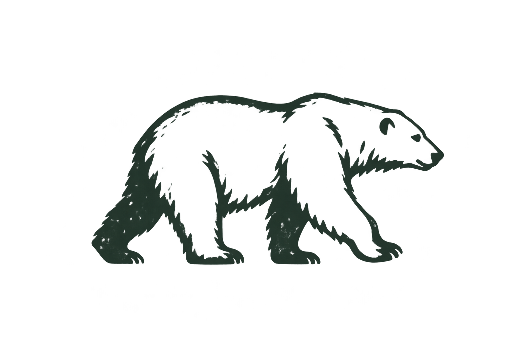
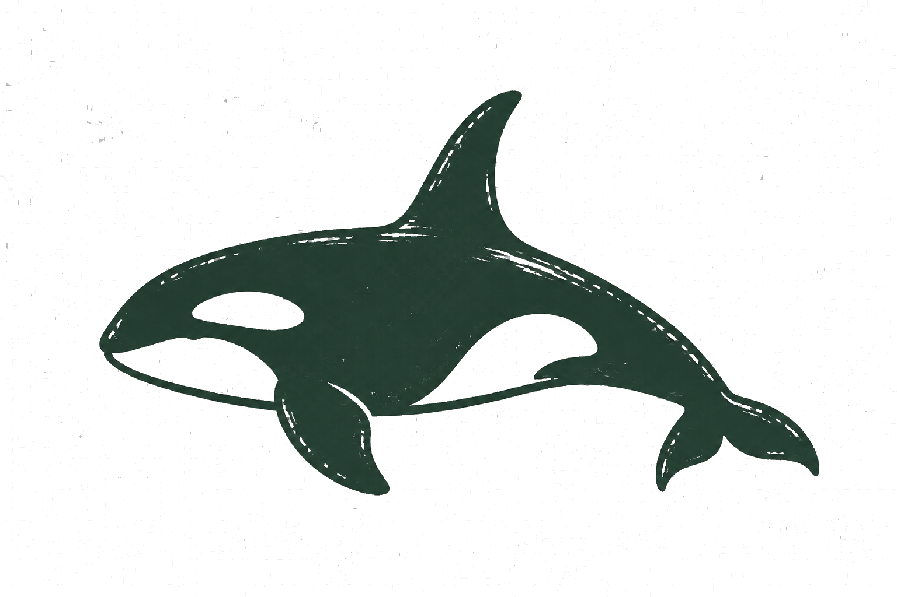
France, Normandy and England.
Three Icelandic locations, including Kambsnes (PZ-03).
Not built yet — no sheet exists in TravelMap/, so PZ-11's Aldeigjuborg hold-back is still provisional.
L’Anse aux Meadows → Battle Harbour → Qikiqtarjuaq
France, Normandy and England
Three Icelandic locations
Norway → Rus’ → Mediterranean → northern Europe
Maps use approximate modern anchors and a north-up Web Mercator projection. Lines show the aunt’s fictional visit order, not verified historical travel paths. Offline coast data: Natural Earth; mapping: Leaflet.
Across the Atlantic · 3 stops
Rollo · William · Richard · 6 stops
Icelandic settlement trail · 3 stops
Eastward and back again · 6 stops
Build specification for The Raven Inheritance, derived from the design decisions taken on 9–10 September 2026. Covers the postcard system, the cipher, the physical props and the clue-writing standard. Container and lock placement stay out of scope until the backpack and pouches are bought.
AGENTS.md, none of it should be printed on a prop until verified. The list of claims needing verification is at the bottom of this tab.
The Hiking backpack is the calibration. Its codes sit at the intersection of two or three props, its items arrive before their purpose is known, and the part it hides is the ordering rule rather than the data. Norse should be a notch harder than that.
Run every puzzle through these:
Answering all three makes the puzzle obvious. Answering none makes it unfair. Answer two, hide one. The hidden one should almost always be the third.
Numbers and letters stay in plain sight. What players have to earn is which ones to use and in what sequence. This is what the Hiking sticker puzzle does: the digits are visible, the historical-era ordering is the puzzle.
The cheapest strong aha is re-reading a prop already read for a different reason. Plant ordering rules as throwaway habits in the aunt's letters, then make one of them load-bearing three puzzles later.
At least two codes in the game should need three separate props: a data source, a selection rule and an ordering rule. This is the main difficulty lever and it is cheaper than adding puzzles.
Where possible the final step should produce a word or a shape that is visibly right before the lock is touched. Hiking does this with MOON.
Nothing is a dead end. A prop that looks irrelevant now must be load-bearing later. Never spend a player's attention without eventually repaying it.
No outside knowledge, ever. Rune tables, coin references and board rules all ship inside the bag, the way Hiking ships a periodic table and a calculator.
One card per route stop, giving 18 cards across the four trails. At this volume the cards stop being individual clues and become a corpus, which is a better toy: it supports grouping, sorting and a much larger final reveal.
| Decision | Value |
|---|---|
| Count | 18 — one per stop in TravelMap/Norse_Aunt_Route_Plan.json (Leif 3, family 6, Aud 3, Harald 6) |
| Size | Approx. 5 × 3.5 in (vintage postcard proportion) |
| Universal design elements | Series motif (trail identity), postmark (date and place), a titled Fun Fact block and her handwriting — on all 18 |
| Ordering key | The postmark date, on every card |
| Active clue cards | All 18 — superseded, see the Postcard system tab |
| Format | Purchased but never sent — addressed and stamped like a real postcard, just not mailed |
| Recipient address | John Ericson, 24 Longship Way, Ottawa ON K1L 1S1, Canada — same on all 18 cards |
Each card is addressed and stamped like a real postcard rather than a plain note, which is what makes an unmailed stamp collection plausible in the first place: travellers buy postcards and never send half of them. It also earns back an address block as usable clue space, which a note-card format would give up for nothing.
The recipient is fictional: John Ericson, 24 Longship Way, Ottawa ON K1L 1S1, Canada. "Longship Way" doesn't exist as an Ottawa street, so the address can't collide with a real occupied building regardless of the postal code. Ericson doubles as a quiet nod to Leif without being tied to his trail specifically — it reads as the family surname.
The same stamp series is reused across countries within a trail; explained, if it ever needs explaining, as the aunt buying a batch of stamps at the first post office of each leg. This is ordinary traveller behaviour and doesn't need to be stated in-fiction.
First-card layout, built: the writing side is split vertically, with Aunt Liv's existing message on the left and, on the right, the Leif longship stamp and postmark, a shrunk boxed address, and a boxed, titled Fun Fact block underneath it — matching the current spec in the Postcard system tab. The stamp sits at roughly 20 × 24 mm, with a circular place-and-date mark reading 07 JUL. The underline under the day is left over from the superseded 0734 mechanism and now has no job (PC-02), and the mark itself still needs redrawing as a real cancel rather than a clean graphic (PC-10).
This section used to specify a quiet majority of cards with data carried on small subsets — four price cards, five extra-text cards, four tilted stamps and three anomaly stamps — together with the card-by-card worksheet that assigned them.
It has been replaced by the all-active model: every one of the 18 cards does a job besides the final ordering, the data lives in a titled Fun Fact block rather than in a sparse channel, and the anomaly and tilted-stamp channels are dropped. The reasoning and the new assignment are in the Postcard system tab.
Kept as a note rather than deleted silently, because the argument it made — that scarcity is itself a signal — is sound and may be worth reviving if the deck ever grows past 18 cards.
build_postcard_collection.py, where SIZE and PAGE must change together before cards 02/03 and the full collection PDF are rebuilt.
Set on card 01 and approved as the standard for all eighteen. Built in build_postcard_01_pdf.py; measurements are in PDF points on a 5 × 3.5 in card (360 × 252 pt).
x = 278 rather than running under the stamp. That freed 44 pt of height, and the Fun Fact block grew from 48 pt to 89 pt — which is what let every size below go up.| Element | Font | Size / leading | Position |
|---|---|---|---|
| “POST CARD” | Helvetica-Bold | 6.5 | centred, y 232 |
| Her message | Nothing You Could Do | 7.7 / 8.6 | left column, x 20, wraps at the divider |
| Sign-off | Nothing You Could Do | 8 / 9 | under the message |
| Stamp | — | 20 × 24 mm | top right, y 154–222; overlaps the address corner |
| Postmark place | Helvetica-Bold | 4.8 | centre (278, 204), r 23 / 19.5 |
| Postmark date | Helvetica-Bold | 4.2 | struck across the stamp’s left edge |
| “TO” label | Helvetica-Bold | 5.8 | address box y 126–188 |
| Address lines | Nothing You Could Do | 8.6 / 13 | rules stop at x 278 |
| “FUN FACT” header | Helvetica-Bold | 7.5 | box y 31–120 |
| Fun Fact body | Helvetica | 7.4 / 8.8 | 138 pt measure; 7 wrapped lines |
| Publisher imprint | Helvetica | 5 | right-aligned at x 340, baseline y 19 |
| Image credit | Helvetica | 4 / 5 | left-aligned, same baseline as the imprint |
PC-13). 360 × 252 pt, 10:7, for all eighteen cards.1576 join has been re-proofed. build_postcard_collection.py still builds cards 02 and 03 at 6 × 4 in; update its SIZE and PAGE together before treating those printable cards as converted. See PC-11 and PC-13.Colour per trail is decided and two of the four motifs are final. Aud’s and Harald’s motifs were changed after a history review — both are historically wrong as drawn — so their artwork needs redrawing from the briefs below.
| Trail | Colour | Motif | Why |
|---|---|---|---|
| Leif Erikson | #216580 | A longship | The obvious, strongest read for a Vinland voyage; matches the route-map colour already used for this trail. |
| Rollo & descendants | #a2562d | The Bayeux comet | Halley's Comet as depicted in the Bayeux Tapestry (captioned ISTI MIRANT STELLA). Ties directly to Bayeux, a stop already on this trail, and avoids a second ship motif competing with Leif's. |
| Aud the Deep-Minded | #6d528b | A comb Changed | Was high-seat pillars (öndvegissúlur); that is Ingólfr Arnarson’s story, not hers. Landnámabók says Kambsnes is named for the comb Aud lost there — documented, specific to her, and it ties the stamp to the comb prop and to the candidate five-letter answer KAMBR. Artwork to be redrawn (HI-02). |
| Harald Hardrada | #467444 | A Dane axe Changed | Was a labrys, which is Minoan, not Norse. The Varangian Guard were the emperor’s axe-bearing guard and carried the Dane axe: a single broad blade on a long two-handed haft. Still deliberately not his raven banner (Landeyðan), which would compete with the game’s own raven/HRAFN emblem. Artwork to be redrawn (HI-01). |

#216580
#a2562d
#6d528b
#467444First-pass artwork selected. Before it is placed across all 18 postcards, print each stamp at roughly 20×24 mm and confirm that the fine lines remain clear.
One shared style across all four series, so they read as one issuer's stamps rather than four unrelated pictures. These briefs produced the artwork shown above and remain the reference for later revisions.
Shared style, all four: single motif, centred, filling most of the frame. Engraved-line illustration in the style of a Victorian-to-Edwardian postage stamp — fine cross-hatching for shading, no flat colour fills — printed in one dominant ink colour (the trail colour) on a lightly tinted paper ground, not full-colour. A plain perforated border, no denomination, no lettering, no country name, and no date: those are either added later per-card (price, postmark) or intentionally left out. Portrait or landscape orientation, whichever suits the motif, consistent within a series across all its cards.
| Trail | Codex prompt |
|---|---|
| Leif Erikson | A Viking longship under full sail, seen from the side, dragon-head prow, single mast, riding a cresting wave. Engraved-line postage-stamp illustration, single ink colour #216580 on cream paper, fine cross-hatched shading, plain perforated border, no text. |
| Rollo & descendants | A comet with a long curving tail low over a horizon, in the style of the Bayeux Tapestry's depiction of Halley's Comet, with two small stylised figures below pointing up at it. Engraved-line postage-stamp illustration, single ink colour #a2562d on cream paper, fine cross-hatched shading, plain perforated border, no text. |
| Aud the Deep-Minded | A Viking-Age bone or antler comb, seen from the side, with a decorated connecting plate and fine teeth, one or two teeth broken. Engraved-line postage-stamp illustration, single ink colour #6d528b on cream paper, fine cross-hatched shading, plain perforated border, no text. Rewritten |
| Harald Hardrada | A single Dane axe: one broad crescent blade on a long two-handed haft, blade upright and centred, no inner decorative frame. Engraved-line postage-stamp illustration, single ink colour #467444 on cream paper, fine cross-hatched shading, plain perforated border, no text. Rewritten |
The screen-size review is complete. Sanity-check that all four remain readable and distinguishable at true stamp size (roughly 20×24 mm on the finished card) before producing every card's stamp from them.
A real Norse cipher form: a vertical stem with branches on either side. The left branches count which group a rune belongs to; the right branches count its position within that group. Every character is a pair of small numbers drawn as tally strokes.
| Group | Runes |
|---|---|
| 1 | ᚠ f · ᚢ u · ᚦ þ · ᚬ ą · ᚱ r · ᚴ k |
| 2 | ᚼ h · ᚾ n · ᛁ i · ᛅ a · ᛋ s |
| 3 | ᛏ t · ᛒ b · ᛘ m · ᛚ l · ᛦ ʀ |
Old Norse for raven, which is the title of the game. Five runes to five letters with no fudging, and it self-verifies the moment players read it. It fits a five-letter lock or a five-ring cryptex.
| Rune | Group (left branches) | Position (right branches) |
|---|---|---|
| ᚼ h | 2 | 1 |
| ᚱ r | 1 | 5 |
| ᛅ a | 2 | 4 |
| ᚠ f | 1 | 1 |
| ᚾ n | 2 | 2 |
Two of the three questions answered, the third earned.
Three connected pieces — a setup split across two sheets of paper, a three-move escape, and a code read from the king's own travel.
The rules are printed matter, not her handwriting: a gift-shop pamphlet from the Hnefatafl Museum in Oslo, folded into the bag. That keeps the voice rule intact — printed pages carry real history, her hand carries the task. The pamphlet explains how the game is played; Liv's postcard says what to do with it.
The king slides any distance in a straight line. Dark pieces never move, and they block him. No jumping, no captures. The king escapes to a corner.
The pamphlet can say honestly that no complete Viking-Age tafl ruleset survives and that these rules are one reconstruction — which is also the cover for Liv having simplified them. Its text is subject to HI-05 before it is printed. The museum is invented deliberately; the real Oslo institution is the Viking Ship Museum, and the prop should not borrow it.
Her task, on a postcard: get him to a corner in exactly three moves, and count how far he travels each time. The word exactly is what forces the solution to be unique.
Liv wrote the piece positions on the back of a trail map. The ink was still wet when the pamphlet was pressed down on it, and the right-hand strip lifted off — what is left on the map is an illegible smear, and the clean copy is on the pamphlet's blank end panel, mirrored.
PR-09).Both the smear and the offset are printed, not real ink, so the prop is stable and reprintable. This also gives the four trail maps an early job: players handle one mid-game and get used to it, without learning what it is finally for.
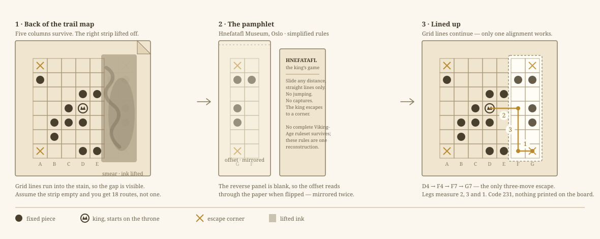
231. Illustrative: the 14 blockers shown are the existing 7 × 7 prototype layout, and the blot is drawn as a clean rectangle here where the real prop needs irregular edges. Both are rebuilt once PR-08 is settled.On the layout in the Prototype tab the unique solution is D4 → F4 → F7 → G7. The legs measure 2, 3 and 1 squares, so the code is 231.
Nothing is printed on the board. The earlier plan — digits on the landing squares, or four moves into a directional lock — is superseded (PZ-01). Reading the code off the king's own travel works on a bought board as well as a built one, and it stops the board from announcing itself as a puzzle prop.
Build the board with a cavity under the throne square and make the king piece the key that opens it. Solving the board physically releases a postcard, with no lock and no code — the best tactile beat available in the bag.
This is the one thing a commercial set cannot do, and it is the real content of PR-08. Buying a board turns this puzzle from a container that opens into a puzzle that feeds three digits to a padlock somewhere else. A middle path exists: buy the set for the pieces and the look, and build a shallow tray for it to sit in, with the compartment under the board rather than under the throne square — less elegant, since the king no longer triggers it, but it keeps a physical opening.
A bought set also constrains the layout. The puzzle is built for 7 × 7 (Brandubh); 9 × 9 and 11 × 11 are the commoner sizes, and either would mean rebuilding the layout and re-running the uniqueness search. A stock 7 × 7 also supplies 12 non-king pieces against the 14 blockers this layout uses, so the layout would need rebuilding to fit even at the right size.
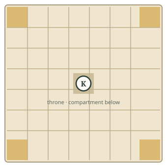
PR-08), and the map/pamphlet split has to be checked against it — the hidden strip must leave the visible board unresolvable rather than merely incomplete.The most Hiking-like puzzle in the set, and the only one that introduces a genuinely new physical verb: weighing.
Three replica coins — an Anglo-Saxon penny, an Islamic dirham, a Byzantine coin. Between them they are Rollo's and Harald's biographies in three objects, so they tie the props to the map without a line of instruction.
Three prop types converge; the data is visible throughout; the ordering rule is the only hidden part — and it is the sole reason a balance is in the bag. Viking traders carried folding balances and cubo-octahedral weights, so the object belongs in the story.
A printed or 3D-printed comb with broken teeth, laid across a postcard message so that only certain words show through the gaps. Rotated or flipped, one comb decodes several cards.
Combs are among the most common Viking finds and broken teeth are entirely plausible, so the object hides in plain sight. The aunt's letter says "my grandmother's comb — I never travel without it." Pure sentiment, until it isn't.
Reuse it. The comb decodes cards early; later, its broken-tooth pattern reads as a tally. Reusing one prop across two stages is harder for players than a new prop and cheaper for you to build.
Each tool opens a class of clue. Each should have one primary job so it never feels decorative.
Primary job: the trail reading order. The order in which the four trails are read is currently "left to right," which is arbitrary — the strongest moment in the game resting on the weakest rule. Instead, write four small numerals beside the trails on the map in UV ink. The order becomes something she left for you, and the code 1972 survives untouched.
This is the highest-value use of the pen. Spend it here before anywhere else.
Primary job: the illustrations. A red-noise wash over each postcard image; under the filter, one object per card is circled or a latitude appears in the sky. Adds a clue layer with no extra prop.
Needs work Home printers vary a great deal on this. Test colour accuracy before committing any puzzle to it.
Primary job: the branch runes. Carve them small enough that the tally strokes are ambiguous to the naked eye. The magnifier turns "I think that's three branches" into certainty, which makes it a real tool rather than a gimmick.
Puzzles whose answer is an instruction rather than a code. They work best exactly where a lock would be clumsy. Three is the cap — more and the locks stop feeling like the spine.
| # | Role | Placement | Purpose |
|---|---|---|---|
| 1 | Teach | The payoff of the continuation set — four postcards butted together spell out WEIGH WHAT SHE TRADED. | Breaks the assumption that every answer is a number, and does it without needing its own puzzle. Self-verifying: the sentence either reads or it does not. |
| 2 | Tool | Candidate: the answer to the five-letter lock, KAMBR — Old Norse for comb (PZ-03). | The honest way to reveal that the comb is an instrument rather than a keepsake, without spending a hint. If KAMBR is used, the lock opening is the clue. |
| 3 | Hinge | At the map reveal. EVERY CARD IS A PLACE. | The pivot of the whole game. A lock would say "you were right." A sentence says "she knew you would get here." |
Nothing below needs the backpack to be bought first. Every item has an ID in the Open questions tab.
Four cards, one sentence, scissors. It proves the format, and if it does not feel good in the hand nothing else in the postcard system is worth doing.
Fun Fact written (butternuts, far from any butternut tree), the message kept as-is (PC-08 decided), and the back rebuilt to the new layout. It's the template the other seventeen get written against.
PC-03 then PC-04. Interleaved across trails, but in route order within each trail.
PC-05. Give those four cards a selection rule as good as the others, or redistribute them and drop the family.
PC-07. Real trivia, source-checked, with the numbers you need already living in them.
HI-01 and HI-02, from the rewritten briefs above.
PC-11. The three fronts are done at 1500 × 1050 px. Change SIZE and PAGE together in build_postcard_collection.py, then rebuild cards 02/03 and the full collection PDF.
PR-03 to PR-05, plus a full 18-card print to check the table footprint against four maps.
HI-05. Everything in the final section of this tab, before any of it reaches a prop.
Undecided by choice. The candidates are pinning the cards onto the map directly, pins and cord with the cards beside it, or a transparent overlay. Pin spacing and digit legibility must be tested at true print size first. The family 9 is already flagged as the riskiest shape, and 18 cards makes the footprint question sharper.
Print a test sheet and check that the noise wash genuinely hides the hidden layer at arm's length and genuinely reveals it under the filter.
Search the board layout to confirm exactly one four-move escape exists before printing.
Carve or print at final size and confirm the tally strokes are countable with the magnifier and genuinely ambiguous without it.
This list has moved. Every unresolved question now lives in the Open questions tab with a stable ID, so there is exactly one register and it cannot drift out of step with this page.
leif route order used in the Travel routes tab (renumbered so this holds, after the trail itself was flipped so L'Anse aux Meadows comes first). The built cards therefore already form one complete trail, the one drawing the digit 1. Useful if intentional: the postcards teach the mechanic on the simplest trail and the map extends it to the other three.
None of the following has been source-checked. Each is used above and must be confirmed, corrected or dropped before it reaches a prop.
The visual system this page already uses, written down so new content — stamp artwork, later props, future tabs — stays consistent with it. Nothing here is a new decision; it's what the page already does, made explicit.
Core chrome first, then the two accent colours used for status and emphasis, then the four trail colours (also used for the stamp series above). Illustration-specific colours inside individual SVG diagrams aren't part of this system and are chosen per diagram.
Trail colours — one per route, reused everywhere a trail is identified: route maps, the postcard corpus worksheet, and now the stamp series.
Headings only (h1, h2), the route digits and the trailhead numerals. A local file, loaded from Fonts/Cinzel. Carries the "museum label" formality.
The workhorse font for everything that isn't a heading, a quote, or a code.
Blockquotes, lock codes (.code), the rune-symbol display, and postcard message copy. A warmer serif for anything meant to feel hand-written or old.
Carried over from the Props & choices tab's presentation direction — restated here as writing guidance, not redecided.
An adventurous aunt, dry museum humour, danger kept fictional and light. Avoid horror, solemn ritual, or dense historical exposition.
Challenge comes from connecting evidence, handling objects and spotting patterns — not trivia, tiny print or obscure rune knowledge.
Assume no prior Norse knowledge. Clue wording stays direct even when the props carry the atmosphere.
A notch harder than Hiking, via convergence — at least two codes needing three separate props — not obscurity.
Solid green for the primary action or the active nav tab; an outlined neutral button everywhere else. No third button style.
Tags label the whole page or a whole card (top of the header, "Decided" lists). Pills are Design-spec-tab only and carry status: green = done/default, rust = open question, brown = needs a test.
The single reusable content container: cream-white fill, a thin warm-grey border, a soft corner radius, generous padding. Called .panel outside the Design spec tab and .card inside it — same look, scoped separately so the two tabs' styles can't leak into each other.
A left-border callout in place of an icon: amber border for a note worth flagging, rust border for something that actually blocks progress. Used sparingly — a page of warnings stops reading as a warning.
Minimal ruled rows, no vertical lines, small-caps-style uppercase headers in muted grey. Used for any structured comparison (stamp series, container contents, route stops) rather than building one-off layouts.
.dot/.swatch) are the only abstract icon in use, for legends: small, flat, colour-coded squares identifying a trail or a design channel at a glance — as seen in the postcard corpus worksheet and the colour swatches on this page.#f0e6cf fill, #a99a7b/#8a7d63 stroke — instead of being illustrated individually. New diagrams should reuse those two stroke tones rather than introducing new ones.Seven subjects approved in five styles: longship, settlement, longhouse, runestone, burial mound, round shield and Dane axe. Clean map, carved woodcut, historic manuscript, antique cartography and hand drawn are all valid treatments; keep the treatment consistent within each finished piece. The raven column is rejected because every version reads too much like a chick. It is shown only as a record of what not to continue; PR-15 now develops the adventure's raven separately.
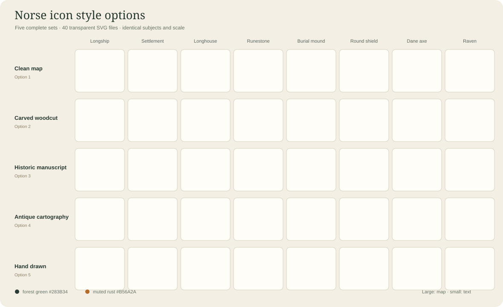
Shared construction: a 0 0 64 64 viewBox, transparent background and the existing forest-green #283B34 / muted-rust #B56A2A palette. Each comparison cell shows the icon at both 64 px and 20 px. The forty study files remain under Icons/Options/; build_style_options.js is their editable source.
Forty more SVGs built: bone/antler comb, hnefatafl game piece, silver coin, carved rune stick, drinking horn, palisade fort, trading port and early wooden church. Each subject is available in clean-map, carved-woodcut, historic-manuscript, antique-cartography and hand-drawn treatments. The objects connect to current puzzle props; the last three extend the map-location vocabulary.
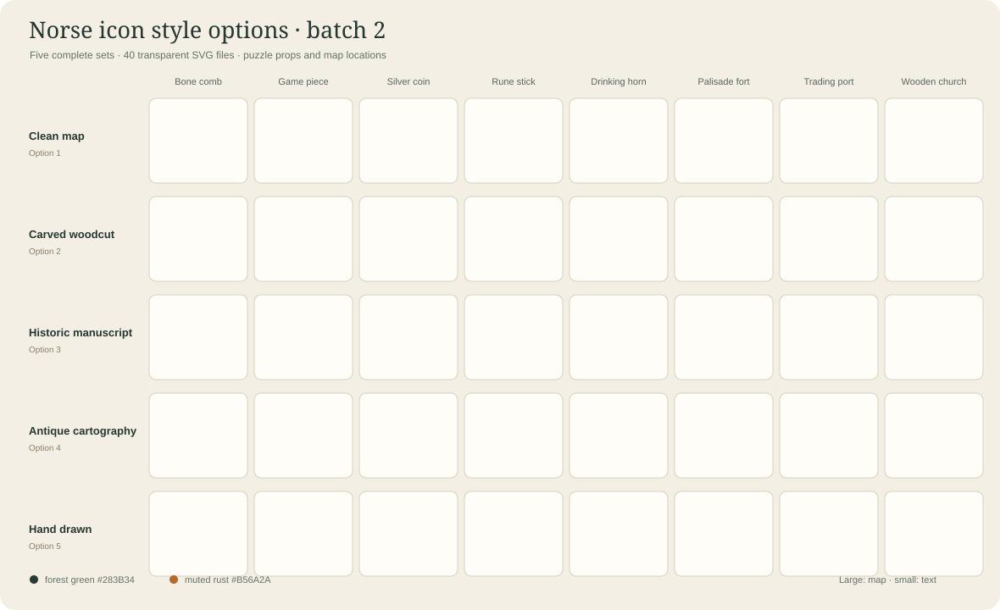
Files: the forty individual transparent SVGs live under Icons/Options_02/. They share the first batch's 0 0 64 64 viewBox and palette. Every comparison cell shows both 64 px and 20 px. The rune stick carries carved tally-notches only, not invented readable runes.
Main image chosen: the profile raven inside the circular Norse knotwork frame. It is the current adventure emblem and a candidate family symbol. The spread-wing study remains secondary. The frame-free profile version is the matching icon; it keeps the same bird rather than returning to the rejected chick-like SVG silhouette.
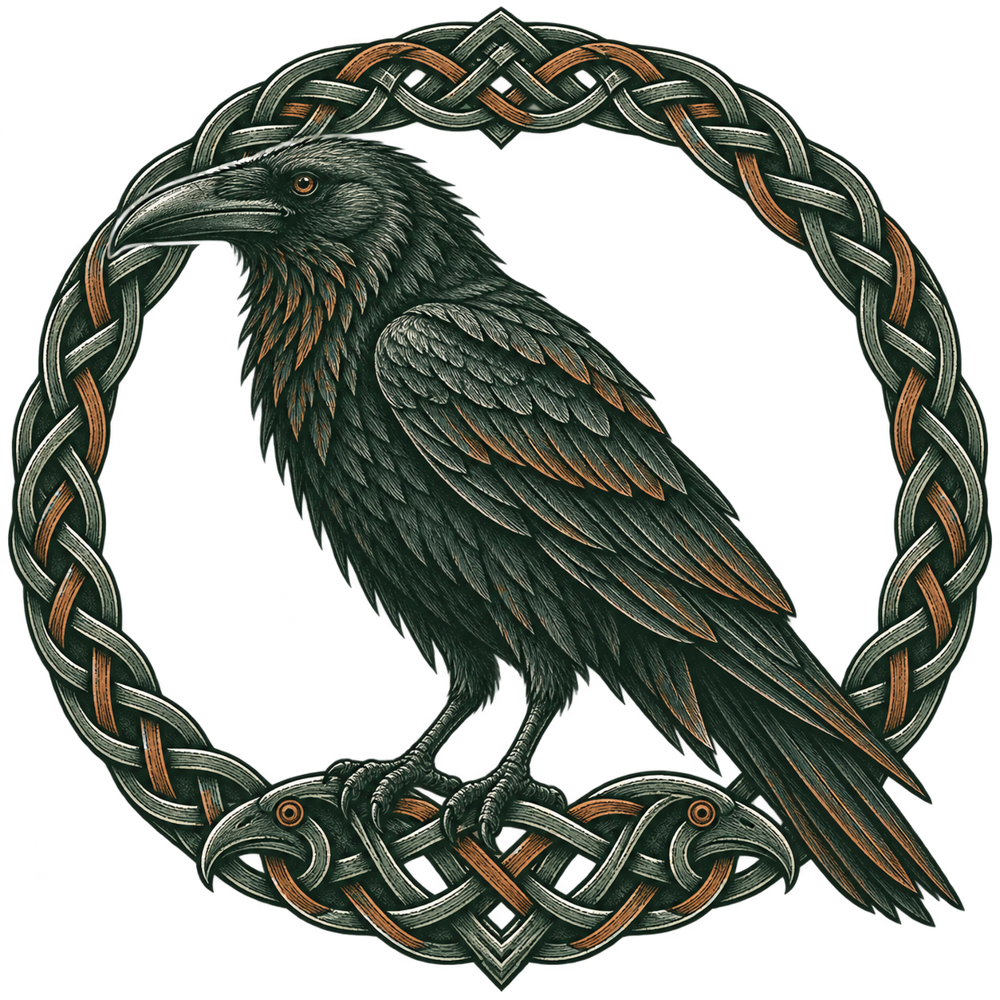
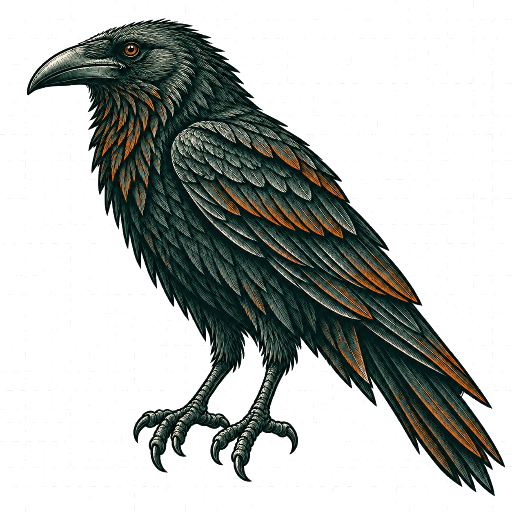
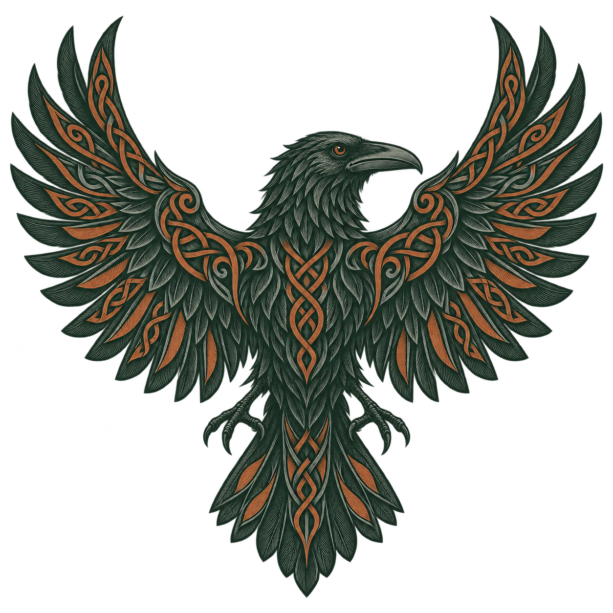
Spread-wing emblem Use case: logo-brand Asset type: intricate hero illustration for the Norse escape-adventure “The Raven Inheritance”; reusable on title pages, letters, maps, and physical props Primary request: One unmistakable adult raven with both wings fully spread in a powerful symmetrical heraldic pose, body front-facing and head turned in a strong side profile. Give it a long heavy slightly hooked beak, shaggy throat feathers, angular shoulders, long primary feathers, and a clearly wedge-shaped tail. Build elegant Norse interlace and carved ribbon motifs into the internal feather divisions, as if drawn by a highly skilled manuscript illuminator and woodcarver; the knotwork must belong to the bird rather than surround it. Style/medium: intricate hand-inked Norse ornamental illustration; confident varied line weight; historically inspired interlace rather than generic Celtic clip-art; vector-friendly shapes and clean separations; serious, mysterious, archaeological, refined Composition/framing: centered square emblem, fully visible wings and tail, balanced silhouette, generous transparent margin, no enclosing frame Color palette: dominant dark forest green #283B34 with restrained muted rust #B56A2A accents only; no black, blue, gold, or full color Constraints: genuinely transparent background with alpha; no text, letters, runes, border, circle, scenery, branch, crown, weapons, human figure, extra bird, glow, shadow, gradient, paper texture, watermark, or mockup. It must read instantly as a raven, not a chick, duck, eagle, owl, or generic songbird. No cute proportions, round baby-bird body, tiny beak, orange beak, or orange feet. Profile in circular knotwork frame Use case: logo-brand Asset type: intricate hero illustration for the Norse escape-adventure “The Raven Inheritance”; reusable on title pages, letters, maps, and physical props Primary request: One unmistakable adult raven shown in strong side profile, perched upright inside a complete circular frame made from historically inspired Norse interlace. Give the raven a long heavy slightly hooked beak, alert eye, shaggy throat feathers, layered wing feathers, strong talons, and a long wedge-shaped tail. The circular knotwork frame should weave over and under cleanly and feel carved, with two subtle raven-head terminals worked into the lower crossing; the bird remains the dominant subject and must not merge into the frame. Style/medium: intricate hand-inked Norse ornamental illustration; confident varied line weight; manuscript illumination crossed with fine woodcarving; vector-friendly shapes and clean separations; serious, mysterious, archaeological, refined Composition/framing: centered square emblem; raven faces left; entire circular knotwork ring visible with generous transparent margin; balanced negative space around the beak, back, and tail Color palette: dominant dark forest green #283B34 with restrained muted rust #B56A2A accents in selected knotwork crossings and feather details only; no black, blue, gold, or full color Constraints: genuinely transparent background with alpha; no text, letters, runes, scenery, branch extending outside the frame, crown, weapons, human figure, extra full bird, glow, shadow, gradient, paper texture, watermark, or mockup. It must read instantly as a raven, not a chick, duck, eagle, owl, or generic songbird. No cute proportions, round baby-bird body, tiny beak, orange beak, or orange feet. Frame-free profile icon edit Use case: precise-object-edit Asset type: transparent profile-raven icon derived from the approved family-symbol artwork Input image: edit target — preserve the raven itself Primary request: Remove the entire circular Norse knotwork frame, including the two raven-head terminals and every strand behind or beneath the bird. Keep only the single profile raven. Composition/framing: retain the raven’s left-facing profile, pose, proportions, beak, eye, shaggy throat, layered wing, body, legs, talons, and long wedge tail; center the isolated bird on a square transparent canvas with generous even margin. Where the talons previously touched the lower frame, finish them naturally as complete isolated talons without adding a perch or ground line. Invariants: preserve the original raven’s exact engraved hand-inked style, forest-green #283B34 and muted-rust #B56A2A palette, feather pattern, line weight, serious expression, and adult-raven anatomy. Change only what is necessary to remove the frame and complete the exposed talons. Constraints: genuinely transparent background with alpha; no circle, border, knotwork frame, ribbon, branch, perch, ground, scenery, text, letters, runes, shadow, glow, gradient, paper texture, watermark, extra bird, or mockup. Do not simplify into a chick-like or generic bird icon. Alpha correction ImageGen returned a grey-and-white checkerboard baked into RGB twice rather than transparent alpha.Art/Raven/remove_checkerboard_background.jsremoves only the repeated neutral checker colours, including the enclosed patch between the legs, while preserving the varied pale engraving strokes. The checked result isRaven_Profile_Icon_v1.png.
Built: balanced adventure-map treatment. Seven animal vignettes now occupy the requested reference cells: bear F1, seal D1, hare A3, deer G2, loon B5, wolf A6 and orca G7. The longship, whale, iceberg and three-building settlement remain in their prior positions. Transparent PNGs live in TravelMap/Art/. They print below all labels at reduced opacity.
Longship Use case: illustration-story Asset type: transparent decorative vignette for a printable Viking treasure map Primary request: A historically plausible Viking longship under a single square sail, seen cleanly from the side, moving west with the dragon-head prow pointing left, riding two restrained curling waves. Style/medium: flat hand-pulled screen-print map illustration; simplified confident shapes; lightly weathered ink edges; visually compatible with an elegant antique adventure map, not a postage stamp. Composition/framing: wide horizontal silhouette, approximately 2:1, centered with generous transparent margin. Color palette: dark forest green #283B34 linework and muted rust #B56A2A as a very small accent; no other colors. Constraints: genuinely transparent background with alpha; thin-to-medium lines no heavier than map coastline; clear at about 2.5 x 1.75 inches; no text, no border, no compass, no people, no extra objects, no drop shadow, no paper texture, no gradient, no cross-hatching, no watermark. Whale Use case: illustration-story Asset type: transparent decorative vignette for a printable Viking treasure map Primary request: A minimal breaching North Atlantic whale in profile, arcing upward above exactly two simple curling wave lines and a tiny splash. Style/medium: extremely simplified flat screen-print cartographic ornament; bold clean contour with only four or five internal strokes total; lightly imperfect ink edge; visually quieter than map labels. Composition/framing: low wide horizontal vignette approximately 1.6:1, centered with generous transparent margin. Color palette: dark forest green #283B34 only, with transparent negative space. Constraints: genuinely transparent background with alpha; readable at 1.6 inches wide; no stippling, no dots on skin, no realistic shading, no cross-hatching, no grey fill, no texture inside the whale, no text, no border, no ship, no scenery, no shadow, no paper texture, no gradient, no watermark. Iceberg Use case: illustration-story Asset type: transparent decorative vignette for a printable Viking treasure map Primary request: One angular North Atlantic iceberg with two small separated ice floes, recognizable but understated. Style/medium: flat hand-pulled screen-print map illustration; simplified geometric shapes; lightly weathered ink edges; elegant antique adventure-map ornament. Composition/framing: compact horizontal vignette, approximately 1.4:1, centered with transparent margin. Color palette: cool grey #59635D outlines with sparse dark forest green #283B34 details only. Constraints: genuinely transparent background with alpha; thin lines no heavier than map coastline; clear at about 1.38 x 1 inch; no text, no border, no animals, no ship, no drop shadow, no paper texture, no gradient, no cross-hatching, no watermark. Polar bear Use case: illustration-story Asset type: tiny transparent decorative vignette for a printable Viking treasure map Primary request: A polar bear walking in profile, facing right, immediately recognizable from a simple strong silhouette. Style/medium: very simple flat hand-pulled screen-print map icon; elegant antique adventure-map ornament; minimal internal detail and lightly weathered ink edges. Composition/framing: compact horizontal silhouette, centered with generous transparent margin. Color palette: dark forest green #283B34 only. Constraints: genuinely transparent background with alpha; very simple enough to read at roughly 0.55 inches wide; thin-to-medium outline; no ground, no landscape, no text, no border, no shadow, no paper texture, no gradient, no cross-hatching, no watermark. Wolf Use case: illustration-story Asset type: tiny transparent decorative vignette for a printable Viking treasure map Primary request: A northern grey wolf standing in profile, facing left, alert but not snarling, immediately recognizable from a simple strong silhouette. Style/medium: very simple flat hand-pulled screen-print map icon; elegant antique adventure-map ornament; minimal internal detail and lightly weathered ink edges. Composition/framing: compact horizontal silhouette, centered with generous transparent margin. Color palette: dark forest green #283B34 only. Constraints: genuinely transparent background with alpha; very simple enough to read at roughly 0.55 inches wide; thin-to-medium outline; no ground, no trees, no text, no border, no shadow, no paper texture, no gradient, no cross-hatching, no watermark. Seal, hare, deer, loon and orca Each complete prompt was assembled verbatim as its subject-specific Primary request line, followed by the shared block and then its Avoid line below. The existing polar bear and wolf PNGs were supplied as style references only. Seal · Primary request: A North Atlantic harbour seal hauled out in side profile, body low and horizontal, head raised, facing right, immediately recognizable from its streamlined body and short foreflippers. Seal · Avoid: whale-like tail, long legs, cartoon face. Hare · Primary request: An Arctic hare sitting in side profile, facing right, immediately recognizable by its very long upright ears, compact haunches, and small tail. Hare · Avoid: rabbit-like floppy ears, ground line, plants, cartoon proportions. Deer · Primary request: A woodland caribou / reindeer standing in side profile, facing left, immediately recognizable by its branching antlers, long legs, and northern deer proportions. Deer · Avoid: elk-sized palmate antlers, ground line, trees, scenery. Loon · Primary request: A common loon floating in clean side profile, facing right, immediately recognizable by its low body, straight pointed bill, and one restrained waterline beneath it. Loon · Avoid: duck-like broad bill, chick proportions, flying pose, waves beyond the single short waterline. Orca · Primary request: A killer whale / orca surfacing in clean side profile, facing left, immediately recognizable by its tall dorsal fin, rounded head, and white eye patch expressed as transparent negative space. Orca · Avoid: dolphin beak, breaching pose, splash, waves, extra fins. Shared block: Use case: illustration-story Asset type: tiny transparent animal vignette for a printable Viking treasure map Input images: style references only—the existing polar bear and wolf map vignettes; do not copy their animal anatomy Style/medium: match the references closely: very simple flat hand-pulled screen-print map icon, elegant antique adventure-map ornament, minimal internal detail, lightly weathered ink edges Composition/framing: one isolated animal, compact silhouette, centered with generous transparent margin Color palette: dark forest green #283B34 only Constraints: genuinely transparent background with alpha; simple enough to read at roughly 0.55 inches wide; thin-to-medium outline; no text, border, shadow, paper texture, gradient, cross-hatching, watermark, extra animal, or unrelated objects. Settlement Use case: illustration-story Asset type: tiny transparent settlement vignette for a printable Viking treasure map Primary request: A compact cluster of three simple turf-roofed Norse wooden buildings, one slightly larger hall and two small houses, viewed from a gentle side angle. Style/medium: very simple flat hand-pulled screen-print map icon; elegant antique adventure-map ornament; minimal detail and lightly weathered ink edges. Composition/framing: low wide cluster approximately 1.6:1, centered with transparent margin. Color palette: dark forest green #283B34 outlines with a restrained muted rust #B56A2A accent on the roofs. Constraints: genuinely transparent background with alpha; clear at roughly 0.7 inches wide; no people, no trees, no fence, no smoke, no landscape, no text, no border, no shadow, no paper texture, no gradient, no cross-hatching, no watermark.